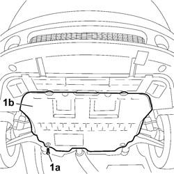
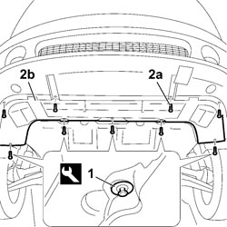

7055B54 UNDER ENGINE PROTECTION/GUARD - R.R.
- Path
- Procedures > 70 FITTINGS > 7055 MOULDINGS AND PROTECTION > 7055B EXTERIOR PROTECTIONS > 7055B54 UNDER ENGINE PROTECTION/GUARD - R.R.
- Kind
- repair procedure (removal / refitting; the operation number is the code)
- Applies to
- all engines; all production periods
- Interactive page
- https://sloeber94.github.io/elrnDB-fCrm/en/#/194001180
Applies to: all engines; all production periods
 Removing
Removing
 Refitting
Refitting1. Undo the eight bolts (1a) fixing the rear section of the protection under the engine (1b).
- Remove the rear protection under the engine from the vehicle.

Applies to: all engines; all production periods
1. Using the special tool, release the four retaining buttons for the front part of the protection under the engine from the bodyshell.
Tool | Description | Function | Validity |
|---|---|---|---|
1878077000 | Knife | Retainer removal |
2. Undo the four bolts (2a) securing the front protection under the engine (2b) to the bumper trim.
- Remove the front protection under the engine from the vehicle.

Applies to: all engines; all production periods
Refitting
Removing- Check that the front protection under the engine is not damaged.
- Position the front protection and fit the four retaining buttons.
- Tighten the bolts fixing the front protection to the front bumper.
- Check that the rear protection under the engine is not damaged.
- Position the protection and tighten the fixing bolts.
Topics that link to this page (129)
- H005 POOR DRIVING COMFORT - AT FRONT
- H007 EXCESSIVE ROLLING/PITCHING - AT FRONT
- S018 FRONT SUSPENSION NOISE (KNOCKING)
- T010 PASSENGER COMPARTMENT WIND NOISE, LOWER AREA (UNDERBODY)
- 0010T12 ENGINE OIL AND FILTER - REPLACE
- 0010T20 ENGINE COOLANT - CHANGE
- 0010T40 CHANGE MANUAL GEARBOX OIL
- 0010T41 MANUAL GEARBOX OIL CHECK LEVEL AND TOP UP IF NECESSARY
- 0010T44 CHANGE AUTOMATIC TRANSMISSION FLUIDS
- 0010T45 AUTOMATIC TRANSMISSION FLUID CHECK LEVEL AND TOP UP IF NECESSARY
- 0010T82 DIESEL SYSTEM - BLEED WATER FROM DIESEL FILTER RESEVOIR
- 1004B10 POWER UNIT WITH MANUAL GEARBOX - R.R
- 1004B14 POWER UNIT WITH AUTOMATIC TRANSMISSION R + R
- 1008A42 POWER UNIT RIGID SUPPORT - GEARBOX SIDE - R.R.
- 1008A46 POWER UNIT RIGID SUPPORT - TIMING SIDE - R.R.
- 1008B10 POWER UNIT FRONT SUPPORT FLEXIBLE MOUNTING (TIMING SIDE) - REPLACE
- 1008B30 GEARBOX SIDE SUPPORT FLEXIBLE MOUNTING(S) - REPLACE
- 1008B40 POWER UNIT REAR L/H FLEXIBLE BLOCK - R+R
- 1008C32 GEARBOX LOWER REACTION ROD -R.R.
- 1008C34 BRACKET ON GEARBOX FOR LOWER REACTION ROD - R.R.
- 1016C10 SINGLE CYLINDER HEAD - R.R. AND REPLACE GASKET
- 1020A20 CRANKCASE OIL SUMP - R.R CLEAN SURFACES FOR SEALANT APPLICATION
- 1020A30 ENGINE OIL DRAIN PLUG - REPLACE
- 1020D14 FRONT CRANKSHAFT OIL SEAL COVER - R.R AND REPLACE SEALS FOR VERSIONS WITH OIL PUMP ON CRANKSHAFT, TIMING SIDE
- 1020D38 FLYWHEEL SIDE OIL SEAL - REPLACE
- 1024B10 ENGINE FLYWHEEL - R + R FOR VERSIONS WITH MANUAL GEARBOX
- 1028H10 CONNECTING ROD AND PISTON SET - R.R
- 1032B10 TOOTHED TIMING BELT - R + R FOR TIMING ADJUSTMENT OR REPLACEMENT
- 1036B10 OVERHEAD CAMSHAFT IN CYLINDER HEAD - R.R ON VEHICLE
- 1036L10 CAMSHAFTS IN CAMSHAFT HOUSING - R.R. - INCLUDES CAMSHAFT HOUSING REPLACEMENT IF NECESSARY
- 1048A23 COLD AIR INTAKE FOR AIR FILTER - R.R
- 1048A50 TURBOCHARGER AIR INTAKE PIPE - R.R.
- 1048B10 RIGID SUPPLY PIPE (ONE) BETWEEN TURBOCHARGER AND HEAT EXCHANGER -R.R.
- 1048B14 AIR DELIVERY HOSE BETWEEN TURBOCHARGER AND HEAT EXCHANGER - REPLACE
- 1048B17 HEAT EXCHANGER AIR INLET HOSE - R.R.
- 1048B20 AIR SUPPLY HOSE FROM HEAT EXCHANGER TO RIGID PIPE - REPLACE
- 1048B25 INTERMEDIATE RIGID PIPE BETWEEN HEAT EXCHANGER AND THROTTLE BODY - R R
- 1048B50 TURBOCHARGER INTERCOOLER - R + R
- 1056B64 COOLANT TEMPERATURE SENSOR ON RADIATOR - R.R.
- 1056B90 SYSTEM CABLE LOOM - R.R.
- 1060G20 ENGINE RPM SENSOR - R.R.
- 1060G22 CAM ANGLE SENSOR - R.R
- 1060G80 DIESEL ELECTRONIC INJECTION CONTROL UNIT - .R
- 1060G90 SYSTEM CABLE LOOM - R.R.
- 1064A27 PIPE BETWEEN VACUUM RESERVOIR AND ACTUATOR CONTROL SOLENOID VALVE - R.R.
- 1072B10 INLET MANIFOLD - R + R AND REPLACE SEAL
- 1072C44 EXHAUST MANIFOLD HEAT SHIELD - R+R
- 1076B10 EXHAUST PIPE ASSEMBLY - R + R
- 1076B12 EXHAUST PIPE ASSEMBLY R R
- 1076B18 RIGID SECTION OF EXHAUST PIPE BETWEEN CATALYTIC CONVERTER AND SILENCER - R + R
- 1076B20 REAR EXHAUST SILENCER - R + R
- 1076B72 INTERMEDIATE EXHAUST PIPE WITH HOSE SECTION - R+R
- 1080B40 CATALYTIC PRE-CONVERTER - R.R
- 1080B62 CATALYTIC CONVERTER - R + R
- 1080B64 CATALYTIC CONVERTER EXCESS TEMPERATURE THERMOCOUPLE - R + R
- 1080B90 LAMBDA SENSOR - R.R.
- 1080B95 REAR LAMBDA SENSOR TO CATALYTIC CONVERTER - R.R
- 1080C83 EXHAUST GAS INLET PIPING FROM EXHAUST MANIFOLD TO HEAT EXCHANGER EGR - R R
- 1084A16 OIL DIPSTICK PIPE - R.R
- 1084A40 ENGINE OIL LEVEL SENSOR - R + R
- 1084A42 ENGINE OIL PRESSURE WARNING LIGHT SWITCH - R + R
- 1084B26 ENGINE OIL INTAKE DUCT - R.R
- 1084B30 ENGINE OIL FILTER - R.R
- 1084B34 CARTRIDGE ENGINE OIL FILTER SUPPORT - R + R
- 1084B36 ENGINE OIL FILTER MOUNTING AND HEAT EXCHANGER - R.R
- 1084B40 ENGINE OIL DELIVERY PIPE TO TURBOCHARGER - R + R
- 1084B42 ENGINE OIL RETURN PIPE FROM TURBO - R + R
- 1084C10 ENGINE OIL HEAT EXCHANGER - R + R
- 1084C38 ENGINE OIL DELIVERY AND RETURN PIPES TO COOLING RADIATOR - R + R
- 1088B10 ENGINE COOLANT SUPPLY RESERVOIR - R.R.
- 1088B12 ENGINE COOLANT RESERVOIR MOUNT - R R
- 1088B20 ENGINE COOLING RADIATOR - R + R
- 1088B26 AIR DUCT ON RADIANT MASS - R.R.
- 1088B29 ENGINE COOLING RADIATOR SUPPORT (1), LH OR RH - R R
- 1088B35 <x>LOWER PIN SUPPORTING ENGINE COOLING RADIATOR (ONE), LH OR RH - R&R</x>
- 1088B36 <x>UPPER PIN SUPPORTING ENGINE COOLING RADIATOR (ONE), LH OR RH - R&R</x>
- 1088C40 THERMOSTAT- R + R
- 1088D10 LOWER RADIATOR COOLANT OUTLET HOSE - R.R.
- 1088D14 UPPER RADIATOR COOLANT OUTLET HOSE - R.R.
- 1088D24 WATER PUMP RIGID COOLANT INLET PIPE - R.R.
- 1088D31 SLEEVE FROM COOLANT TANK TO INTERMEDIATE RIGID PIPE - R R
- 1088D33 WATER PUMP FEED INTERMEDIATE PIPING - R R
- 1088D35 WATER PUMP FEED RIGID PIPE FITTING SLEEVE - R R
- 1088D56 ENGINE OIL HEAT EXCHANGER DELIVERY AND RETURN DUPLEX RIGID PIPING - R R
- 1088D59 COOLANT SUPPLY PIPE TO THROTTLE BODY - R.R.
- 1088D60 COOLANT RETURN PIPE FROM THROTTLE BODY - R.R.
- 1088E11 FANS WITH SINGLE ENGINE DUCT - R+R
- 1092G10 SINGLE ENGINE BELT - R.R
- 1092D20 AIR CONDITIONER COMPRESSOR BELT MOBILE TENSIONER - R R
- 1810A20 CLUTCH - R + R
- 1820B30 CLUTCH HYDRAULIC ACTUATOR - R.R.
- 1820B58 CLUTCH HYDRAULIC CIRCUIT VIBRATION DAMPER - R+R
- 1820B41 HOSE FROM CLUTCH RESERVOIR TO MASTER CYLINDER (PUMP) - R.R. FOR RIGHT HAND DRIVE VERSIONS
- 1820B52 <x>HOSE FROM MASTER CYLINDER (PUMP TO CLUTCH HYDRAULIC ACTUATOR - R&R</x>
- 2110A10 MANUAL GEARBOX AND DIFFERENTIAL - R + R
- 2130A27 DELIVERY AND RETURN DUPLEX PIPING OF AUTOMATIC GEARBOX OIL TO COOLING RADIATOR - R R
- 2130A22 COOLING RADIATOR OF AUTOMATIC TRANSMISSION HYDRAULIC CIRCUIT - R + R - INCLUDING FLUID LEVEL TOP UP IF NECESSARY
- 2130A36 <x>AUTOMATIC TRANSMISSION FLUID COOLING CIRCUIT THERMOSTAT VALVE - R&R</x>
- 2130B36 AUTOMATIC TRANMISSION VALVE COVER R R
- 2130B40 GEAR SELECTION SOLENOID UNIT - R R
- 2135B58 ELECTRONIC AUTOMATIC TRANSMISSION SYSTEM WIRING - R R
- 3330C12 MASTER CYLINDER (PUMP) - R.R. FOR RIGHT HAND DRIVE VERSIONS
- 3330C34 BRAKE FLUID RESERVOIR - R + R AND WASH INSIDE - VERSIONS WITH RIGHT HAND DRIVE AND ABS
- 3330C44 BRAKE FLUID MINIMUM W/L SWITCH - R + R
- 3330D03 SERVO BRAKE / BRAKE PUMP ASSEMBLY - R.R. FOR RIGHT DRIVE VERSIONS
- 3340B53 RIGID PIPE (ONE) FROM MASTER CYLINDER (PUMP) TO ABS HYDRAULIC CONTROL UNIT - R.R. FOR RIGHT HAND DRIVE VERSIONS
- 4130B25 POWER STEERING PUMP ASSEMBLY R R FOR VERSIONS WITH AIR CONDITIONER
- 4130B32 POWER STEERING PUMP SUPPORT - R R
- 4130B40 SUPPLY PIPE FROM PUMP TO POWER STEERING BOX - R.R.
- 4130B42 RETURN PIPE FROM POWER STEERING BOX TO POWER STEERING FLUID RESEVIOR - R.R.
- 5010A12 HEATER WATER SUPPLY PIPE - R.R.
- 5010A16 HEATER WATER RETURN PIPE - R.R.
- 5020M10 INDEPENDENT HEATER UNIT - R R
- 5020M36 FUEL INTAKE HOSE TO INDEPENDENT HEATER UNIT R R
- 5020M44 SUPPLEMENTARY INDEPENDENT HEATER EXHAUST PIPE SILENCER R R
- 5020M58 HOSE FOR COOLANT ENTERING ADDITIONAL SELF-STANDING HEATER UNIT - R R
- 5020M60 FLEXIBLE PIPING FOR COOLANT EXITING FROM ADDITIONAL SELF-STANDING HEATER UNIT - R R
- 5040A20 AIR CONDITIONING COMPRESSOR - R+R - INCLUDES FLUID LEVEL CHECK AND TOP UP IF NECESSARY
- 5040A24 AIR CONDITIONING COMPRESSOR - PARTIALLY R.R. FROM THE ENGINE WITHOUT DISCONNECTING THE PIPES
- 5040A26 AIR CONDITIONING COMPRESSOR SUPPORT - R.R.
- 5040A40 AIR CONDITIONING CONDENSER - R+R
- 5040A74 TANDEM PIPE FOR DELIVERY AND RETURN TO AIR CONDITIONING COMPRESSOR - R.R.
- 5510C42 DETONATION SENSOR (ONE) - R.R.
- 5520B10 STARTER MOTOR - R+R
- 5520B14 STARTER MOTOR - DISMANTLE AND REBUILD AT BENCH - WASH, CHECK AND REPLACE COMPONENTS IF NECESSARY
- 5520B18 STARTER MOTOR SOLENOID - R+R WITH MOTOR REMOVED
- 5530A10 ALTERNATOR - R+R
- 5530A30 ALTERNATOR PULLEY OR FAN - R+R WITH ALTERNATOR REMOVED
- 5550B30 L/H OR R/H HORN (ONE) - R+R